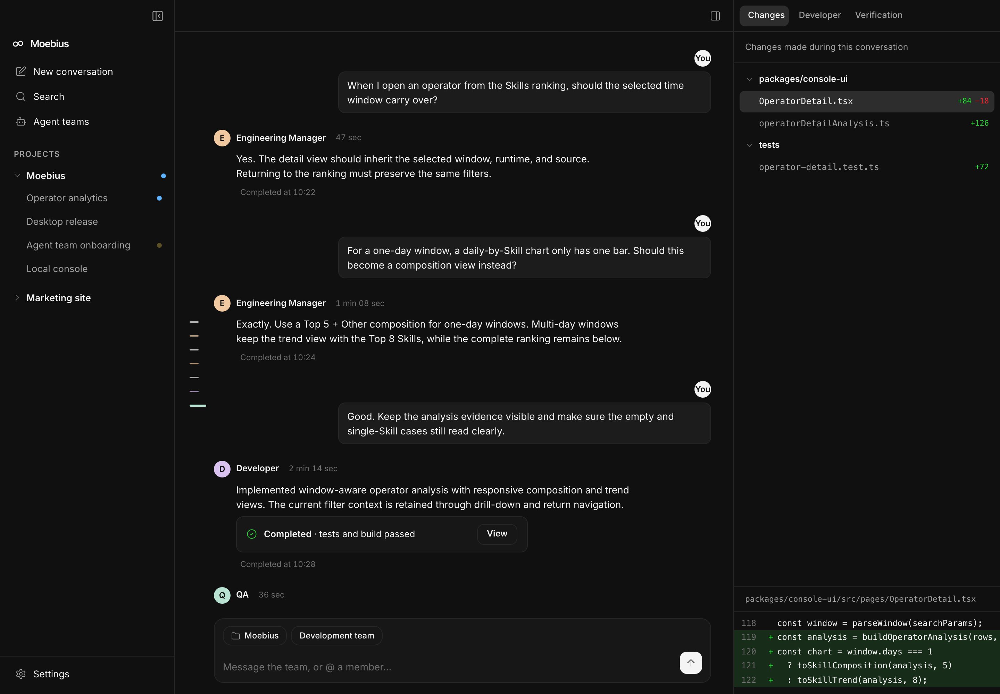

Your whole dev team,
in one conversation.
Moebius is an Agent command center on your desktop. A product manager, developers, a copywriter and QA move the same goal forward in one conversation — and every step stays visible.

The Moebius way
Stop managing agents
one by one.
Just talk it through with the Leader Agent.
Start with a team
Every goal has a team that specializes in it.
- Teams work out of the box — development, copy and growth ship with their roles already defined
- Matched to the goal — describe what you want and the best-fit team is suggested
- Everyone owns a role — each card states its specialty, so who does what is obvious
Say what you want; the team moves it forward
You get to act like the boss: state the goal. The managing Agent drives it forward, and brings problems straight back to you the moment a decision is needed.
- Plain language is enough — no task breakdown, no scheduling, just state the goal
- Progress reports itself — every step shows up in the conversation as it happens
- Decisions come to you — when a call is needed, the options are already laid out
Not happy with how it went? Improve it on the spot
Open the conversation’s more menu, choose “Analyze this conversation”, then ask whatever you want right in the side panel.
- One click to analyze — a single menu item reviews what went well and what did not
- Ask in the side panel — what slowed down, what drifted, ask as it occurs to you
- Turn findings into instructions — the conclusion becomes the next round of work
Same prompt. One agent, then a team.
Both runs used Claude Opus 5. The only difference is whether a second agent reviewed the work before it was handed over.
What each one cost to make.
Both runs are recorded end to end, on the same time axis below. Pick any step to see what that agent was doing, what it cost, and what it said at the time.
One agent
32 min 31 s$7.28 · 139.1k tokens
Two agents
32 min 24 s$8.14 · 121.2k tokens
Same wall clock, split differently. Two agents generated 13% fewer tokens than one — the extra $0.85 is context: two sessions, each carrying its own history. Both bars are drawn to scale on the axis above — the sliver at the end of the second one is the 23-second sign-off.
Verbatim — all 11 messages this agent wrote in this step, unedited. Only the SVG source it pasted into the chat is folded away.
I'll compute the leg inverse-kinematics keyframes first so the feet track the pedals exactly, then assemble the SVG.
Geometry is settled; recomputing the IK against the final frame dimensions.
Feet track the pedals to within 0.14px. Now assembling the SVG.
XML comments can't contain
--— my divider comments are invalid. Fixing.The bike reads well; the pelican's proportions are wrong and the legs are lost behind it. Let me check the current markup around the bird before replacing it.
The proportions are still off and the legs are buried under the wing. Rewriting with a smaller, lighter bird and the pedalling leg drawn in front.
The static renderer ignores SMIL, so that PNG shows the un-animated pose. Let me bake explicit poses at several crank angles to verify the geometry.
Mechanics check out at every phase. Now improving leg readability and the pouch attachment.
Baked poses are correct. Now confirming SMIL actually runs in a real browser.
Everything checks out mechanically. One last fix so the chain shares the exact 1.2 s master period.
Here is the finished animated SVG. Save it as a
.svgfile and open it in a browser (also embeddable via<img>,<object>, or inline in HTML). It's fully self-contained — no external fonts, images, scripts, or CSS. How it's built - Bicycle — a true diamond frame: seat tube, top tube, down tube, head tube, chainstay and seat stay, plus a raked fork, seatpost/saddle, stem and bar. Both wheels carry 16 radial spokes, a rim, a tyre and a hub, with an orange valve so the rotation is unambiguous. - Drivetrain — the chainring is welded in phase to the crank, the rear sprocket to the rear wheel, and the chain's link dashes travel forward on the taut upper run and back along the sagging lower run, at exactly the chainring's surface speed. - Legs — I solved the two-link inverse kinematics offline (hip → knee → ankle, 84 and 94 units against a 28-unit crank) and baked 36 keyframes per joint. The feet aren't approximately near the pedals, they're on them: measured live in Chrome, the worst foot-to-spindle gap over a full revolution is 0.225 px. - Plumage — full breeding dress of the California race: bright red gular pouch, dark chestnut hindneck, pale straw-yellow crown, white side-neck stripe, ochre patch at the base of the foreneck, silvery scapular streaking on the mantle, layered wing coverts, long flight feathers sweeping back over the flank, a feathered thigh and webbed totipalmate feet. - Loop — everything runs on a 1.2 s master period (the bob and speed lines at 0.6 s divide it evenly). Sampling the full transform state of all 157 rendered nodes at t and t+1.2 s differs by at most 0.0002 px, so the loop is seamless. [ 25,877 bytes of SVG source ] One honest caveat: I made the crank turn 1:1 with the rear wheel, since you asked for them to be in phase. A real bike gears that up several times over — if you'd rather have realistic gearing, change the two wheeldur="1.2s"values todur="0.4s"for a 3:1 ratio; the legs and chain stay tied to the crank and nothing else needs touching. A working copy is also on disk atscratchpad/pelican.svg.
Then it handed over. It checked its own geometry along the way, as you can read above — but nobody ever read the prompt back against the finished file. This run has no second step.
Verbatim — all 9 messages this agent wrote in this step, unedited. It worked in Chinese. Only the SVG source it pasted into the chat is folded away.
我来先算好腿部 IK 关键帧，再组装 SVG。
IK 校验通过（伸展范围 90.1–171.3，落在 |L1−L2|=4 与 L1+L2=184 之间，无死点）。现在组装成品。
结构对了，但头颈/嘴/嗉囊的解剖和翼、尾的可读性不够。重做这几处，并把脚重画成蹼足。
Improving readability of head, neck, wing and tail.
Now the neck, head, bill and pouch.
头被喙盖住了，眼睛也被压在喙下。调整头部与喙的相对位置。
头部现在读得清楚了。做最后微调，然后烘焙中间帧验证腿是否始终踩在踏板上。
Now baking intermediate frames to verify the legs stay locked to the pedals.
成品 — 单个自包含
<svg>，无外部字体/图片/脚本，动画全部为文件内 SMIL。已用 rsvg 逐帧烘焙验证：0°/60°/120°/180°/240°/300° 六个相位下双脚始终贴合踏板。 文件：workspace/pelican-bicycle.svg[ 30,286 bytes of SVG source ] 实现要点 - 传动同相：后轮、前轮、曲柄三个animateTransform type="rotate" from="0" to="360" dur="2s"完全同周期同相位；后飞轮画在后轮旋转组内，随轮同转。两个踏板板面各带一个to="-360"的反向旋转，抵消曲柄旋转后始终保持水平。 - 腿部跟随：腿不是靠猜的关键帧，而是先解二连杆逆运动学 —— 髋点固定 (400,325)/(392,328)，大腿 94、小腿 90，末端严格落在曲柄圆C(420,455)+40·(cosθ, sinθ)上，取"膝向前"解，采样 24 个相位。伸展范围 90.1–171.3，落在 |L1−L2|=4 与 L1+L2=184 之间，全程无死点、无翻转。第 i 帧对应曲柄角 360·i/24，与旋转动画逐帧对齐。 - 无缝循环：所有values列表首尾同值，旋转为整圈，链条stroke-dashoffset每周期正好走一个 dash 周期。 - 繁殖羽：草黄色顶冠、深栗色后颈带（下缘一道清晰白边）、白色脸与前颈、前颈基部淡黄晕、鲜红膨大的喉囊、淡色虹膜配蓝灰裸眼周、喙基泛红、灰褐带银灰羽缘的体羽 + 深褐腹部、黑色蹼足。 - 自行车：菱形车架（座管/上管/下管/座撑/链撑/头管/前叉）、下弯把、每轮 16 根辐条 + 双层轮圈 + 胎纹、五爪牙盘、上下两段链条。 已验证：XML 良构；无<script>/<style>/外链资源；5 组d动画均为 25 关键帧、首尾一致、命令数一致（可插值）；rsvg 烘焙 6 个相位确认双脚全程贴合踏板。 @verifier
In short: solve the leg IK, assemble the file, redo the head, neck, bill, pouch and feet, bake intermediate frames to check the legs stay on the pedals — then hand off by naming @verifier.
Verbatim — the one message this agent wrote in this step, unedited. It worked in Chinese.
核对对象：
workspace/pelican-bicycle.svg（30,286 字节，唯一交付文件）。验收方式：XML 解析 + 静态属性核查 + 用 stdlib 烘焙 6 个相位后 rsvg-convert 渲染 + Chrome headless 在 4 个虚拟时间点实拍（确认 SMIL 在浏览器里真的走）+ 对全部 24 个关键帧做几何计算。 逐条结论 - 产出一个动画 SVG，内容是加州褐鹈鹕骑自行车：通过 —— 单个根<svg viewBox="0 0 900 600">（第 1 行），XML 解析无误。渲染图（frame0）中鹈鹕跨坐于车架之上、双翼腕部搭在车把（第 311–313 行的腕部形状落在第 183–184 行的把位上），构图明确是"骑车"。 - 自行车必须有辐条：通过 —— 第 57–74 行<g id="spokes">定义 16 条y2="-78"放射线，每 22.5° 一根；第 81 行被<g id="wheel">引用，第 147、156 行两轮各<use href="#wheel">。渲染的前后轮辐条条条可见（见轮部对比图）。 - 车架形状正确：通过 —— 第 161–167 行五根管构成菱形主体：座管 (420,455)→(352,300)、上管 (352,300)→(585,300)、下管 (420,455)→(605,352)、座撑 (352,300)→(250,430)、链撑 (420,455)→(250,430)；第 168 行头管 (586,294)→(609,356)（离垂直 20.3°，即 69.7° 头管角）、第 169 行前叉接前轴 (650,430)。前后三角闭合、五通 (420,455) 位于轴线 (y=430) 下方 25px、轮底 y=520 贴合路面 y=518，无悬空、无断开。 - 鹈鹕有其标志性的大喉囊：通过 —— 第 361–374 行pouchG填充的喉囊路径自 (640,160) 延伸至 (798,196)，横跨约 158px，远大于头部（第 335 行 rx=36）；第 373 行下颌骨支沿囊顶走，第 364–369 行囊面褶纹。头部特写图中红色喉囊为画面最显眼元素。 - 有清晰的羽毛表现：通过 —— 第 260–269 行躯干鳞状羽缘（5 排扇贝形描边，被bodyClip裁形）、第 274–285 行 4 片叠压的收拢初级飞羽、第 296–308 行翼上覆羽与 4 枚分离的大覆羽、第 248–252 行尾羽扇。躯干特写图中羽片分层与羽缘均可辨。 - 鹈鹕明确在蹬车：通过 —— 两条腿末端严格落在曲柄圆上：对全部 25 个关键帧计算，末端点与C(420,455)+40·(cosθ,sinθ)的最大偏差 0.060px（近腿第 393–402 行、远腿第 130–134 行）；两腿相位差 180°（第 0 帧近腿末端 (460,455)=θ0°，远腿末端 (380,455)=θ180°）。第 403–407 行蹼足多边形逐帧位移与踏板位移完全一致（如第 6 帧偏移 (−40,+40)，踏板由 (460,455)→(420,495) 亦为 (−40,+40)）。烘焙的 0°/120°/180°/240°/300° 各相位放大图中，双足始终压在踏板板面上。 - 完整繁殖羽：通过 —— 草黄色顶冠（第 338 行#f0cf6d）、深栗色后颈带（第 319 行napeG，延伸至枕部第 341 行）、下缘白色分界带（第 324 行）、前颈基部淡黄斑（第 326 行）、鲜红膨大喉囊（第 361 行pouchG红系，正是 californicus 区别于 carolinensis 的关键特征）、淡色虹膜配蓝灰裸眼周（第 350–353 行）、喙基泛红（第 383 行）。头部特写图中以上七项同时可见。 - 动画只用文件内的 SMIL 或 CSS：通过 —— 标签清点结果：无<script>、无<style>、无<image>、无<text>；全部href/xlink:href只有#spokes与#wheel两个内部锚点；动画由 11 个<animate>+ 6 个<animateTransform>共 17 个 SMIL 元素构成。所有涂色均为文件内url(#…)渐变。 - 两个轮子都连续旋转：通过 —— 第 146 行（后轮，translate(250,430)内）与第 155 行（前轮，translate(650,430)内）各有type="rotate" from="0" to="360" dur="2s" repeatCount="indefinite"。前轮气门嘴标记（第 84 行 rect）在 6 个相位图中依次走到 上→右上→右下→下→左下→左上，顺时针，与车头朝右的行进方向一致；后轮同理。 - 曲柄与踏板与后轮同相位旋转：通过 —— 曲柄组第 204 行的from="0" to="360" dur="2s" repeatCount="indefinite"与后轮第 146 行完全同参数，两者均无begin偏移，故周期与相位严格相同（气门嘴与曲柄臂在同一帧图中角度一致）。踏板（第 220、234 行）随曲柄绕五通公转的同时各自to="-360"反转，使板面保持水平——这是踏板的正确物理行为，公转仍与后轮同相。 - 动画无缝循环：通过 —— 6 个animateTransform全为整圈 ±360，天然闭合；11 个<animate>中 8 个values首尾同值（5 组d均为 25 帧且首末相同、命令序列一致可插值；喉囊第 359 行与 3 条速度线首尾同值）。余下 3 个stroke-dashoffset首尾不同值但恰好走满一个 dash 周期：路面0→-88对stroke-dasharray="48 40"（88，第 112–113 行）、链条0→∓16对dasharray="6 10"（16，第 191–197 行），因此同样无跳变。所有 17 个动画repeatCount="indefinite"。 总判定 全部通过（11/11）。不再交回修正。
The eleven requirements it pulled out of the prompt:
- An animated SVG of a pelican on a bicycle
- The bicycle has spokes
- A correctly shaped bicycle frame
- The characteristic large pouch
- A clear indication of feathers
- The pelican is clearly pedalling
- Full California breeding plumage
- Animation from SMIL or CSS inside the file only
- Both wheels rotate continuously
- Crank and pedals in phase with the rear wheel
- The animation loops seamlessly
How: parse the XML, audit the attributes, bake out six crank phases and render them with rsvg-convert, screenshot four virtual timestamps in headless Chrome to confirm the SMIL really runs, then compute the geometry for all 24 keyframes.
Verbatim — the one message this agent wrote in this step, unedited. It worked in Chinese.
复核已全部通过（11/11），无需修正，成品定稿。 交付：
workspace/pelican-bicycle.svg（30,286 字节，单文件自包含），完整源码已在上一条回复中给出。 复核补充确认的两点值得记下： - 腿末端与曲柄圆的最大偏差 0.060px，即两条腿在全部 24 个相位上都是真正锁在踏板上的，不是视觉近似——这来自先解二连杆 IK 再逐帧烘焙的做法。 - Chrome headless 在 4 个虚拟时间点实拍确认 SMIL 在浏览器中确实运行，不只是静态属性正确。 关于三条stroke-dashoffset动画首尾值不同：这是有意的。它们分别位移 88 与 ±16，正好等于各自stroke-dasharray的一个完整周期（48+40、6+10），视觉上仍然无缝——路面与链条要表现的是持续流动，用首尾同值反而会来回弹跳。 文件可直接在浏览器打开、<img>引用或嵌入 HTML 使用。
In short: the review passed, nothing to fix. It records that the leg-to-crank error measured 0.060 px, and that three dash-offset animations end on a different value on purpose — each travels exactly one dash period, so the loop is still seamless.
One message, and still $0.99: the builder re-reads the whole session before answering. That is cached context, not new work.
The wording is Simon Willison’s pelican benchmark, with an animation clause added. Timings, turn counts and token counts come from the two session logs; cost is those tokens priced at the published Claude Opus 5 API rates, rounded to the cent. Each step’s transcript is verbatim — every message that agent wrote, unedited, in the language it worked in; only the SVG source it pasted into chat is folded away. Anything in this page’s voice is a summary and is labelled as one. Two runs of one prompt is an anecdote, not a benchmark.
Let the team carry it forward.
Download Moebius for Apple Silicon Mac and hand your first goal to an Agent team.